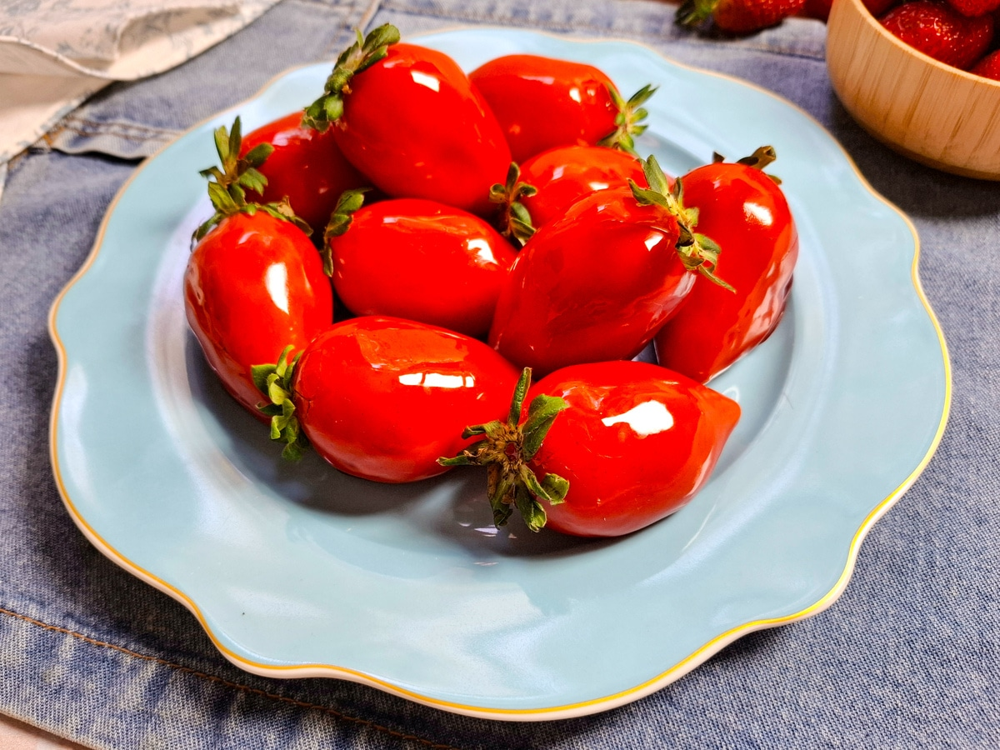

Morango do Amor
Ingredientes:
- 1 caixa de morangos frescos
- 200 g de chocolate ao leite ou meio amargo
- 1 colher de sopa de óleo ou manteiga (para derreter o chocolate)
- Granulados ou chocolate branco para decorar (opcional)
Modo de preparo:
- Lave bem os morangos e seque-os completamente, deixando o talo.
- Derreta o chocolate em banho-maria ou micro-ondas com o óleo ou manteiga, mexendo até ficar liso.
- Mergulhe cada morango no chocolate derretido, cobrindo totalmente ou parcialmente.
- Se desejar, passe os morangos em granulados ou confeitos antes do chocolate endurecer.
- Coloque os morangos em uma assadeira forrada com papel manteiga e leve à geladeira por 30 minutos.
- Sirva decorado ou em caixinhas como presente.